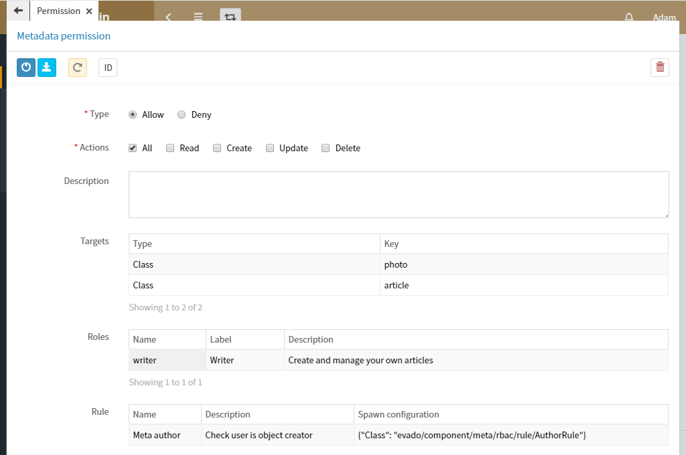

Контроль доступа
Фреймворк Evado контролирует права доступа к ресурсам с помощью ролевой системы RBAC. Это позволяет удобно и гибко настраивать правила ограничений.
Разрешения в системе RBAC описывают то, что можно сделать в приложении. Например, создать категорию, изменить статью, удалить комментарий и так далее.
Роли группируют разрешения в одно целое. Например, роль Автор имеет разрешения создать и редактировать статьи, а роль Модератор имеет разрешение удалять комментарии. Роль может наследовать другую роль.
Назначения связывают пользователей c ролями. Например, если пользователю Adam назначить роль Автор, то Adam сможет делать то, что разрешено Автору - создавать и редактировать статьи.
Перейдите в модуль Администрирование и выберите меню Безопасность/Роли. По умолчанию в приложение есть две роли. Роль Администратор имеет полный доступ к функционалу приложения. Роль Гость не имеет каких-либо разрешений и назначается автоматически для неидентифицированных пользователей.
Для блога необходимо создать дополнительные роли. Роль Автор, позволяющая создавать и управлять собственными статьями и фотографиям, и роль Редактор для управления всеми данными Офиса.
Роль Автор
Создайте роль Автор. Добавьте разрешения Модуль Офис для доступа к Офису и Загрузка файлов. Перейдите в меню Разрешения метаданных. Создайте разрешение, которое позволяет управлять собственными статьями и фотографиями:
Тип Разрешить определяет разрешающее действие. Тип Запретить определяет запрещающее действие. Например, Разрешить создавать или Запретить создавать. Поле Цели определяет метаданные, на которые действует разрешение.
Правило определяет будет ли данное разрешение применено. Это происходит в момент запроса доступа к цели. Правило Meta author проверяет является ли пользователь создателем объекта, к которому пытается получить доступ. Если бы правило отсутствовало, то пользователь с ролью Автор мог бы получить полный доступ к любым статьям, а не только своим.
Роль Редактор
Создайте роль . Добавьте разрешения Модуль Офис и Загрузка файлов. Перейдите в меню Разрешения метаданных. Откройте разрешение полного доступа к данным Офиса и добавьте роль Редактор.
Пользователи
Перейдите в меню Пользователи. Создайте пользователя Walter и добавьте ему роль Автор. Создайте пользователя Edward и добавьте ему роль Редактор. Установите флажок Проверен, чтобы считать электронный адрес подтвержденным и разрешить пользователю работать в системе. Теперь вы можете войти в приложение под созданным пользователем и проверить назначенные роли в действии.